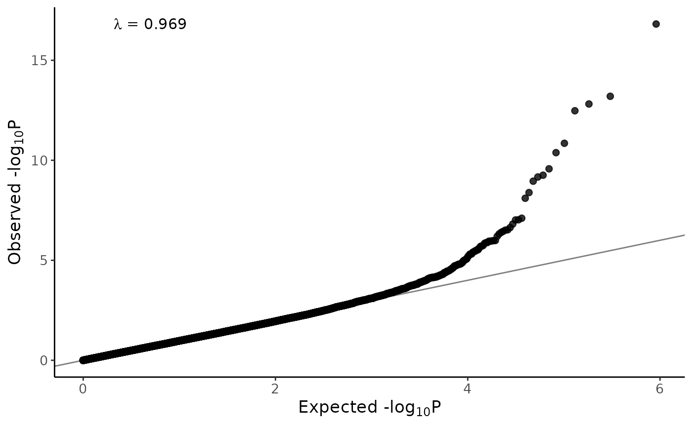

Example EWAS workflow
EWASworkflow.RmdIntroduction
This tutorial illustrates how this package can be used in conjunction with several other R packages to form a complete EWAS workflow. Note that for several steps (i.e. normalization and EWAS confounder adjustment) many methods exist, although it’s outside the scope of this tutorial to provide a comprehensive overview of all these methods, we mention some alternatives at the end of this tutorial.
Data
For this tutorial we’ll use a subset of the rheumatoid arthritis dataset described in vignette("GetExampleData") (Liu et al. 2013).
All results and intermediate files will be save in the ‘workflow’ folder within the output directory (outdir) specified above.
dir.create(paste0(outdir, "/workflow"))
dir.create(paste0(outdir, "/workflow/logs"))Create and inspect QCmetrics
Generate QCmetrics
We start by generating a QCmetrics file, we’ll briefly describe the parameters we’ve specified:
logfile: file where log info will be writtenchunk_size: maximum number of samples that will loaded at a time, a largerchunk_sizewill speed up the analysis, but will use more RAM.experimenter/name: This will be stored in the metadata of theQCmetrics()object.snplinker: Which probes to use to estimate genetic relationships (i.e. which probes reflect underling SNPs). Here we use thesnplinker_minedataset which is included in the R package, this dataset includes probes that were shown to accurately measure underlying SNPs in the Project MinE data.heatmap_variables/heatmap_variables_fct: For which variables should the association with principal components be calculated (which are displayed in a heatmap in theQCapp()(heatmap_variables_fctindicates which variables should be treated as factors.calculate_PCs/n_probes_PCA: Specified that PCA should be performed using the 20,000 most variable probes.path_failed_measurements: Indicates that a sparse matrix should be saved that indicates for each measurement whether it is of low quality. In Mask low-quality measurements we show how to use this matrix to mask low-quality measurements.
samplesheet <- readRDS(sprintf("%s/samplesheet_GSE42861.rds", outdir))
# Generate QC metrics object
qcmetrics <- getQCmetrics(
samplesheet = samplesheet,
logfile = paste0(outdir, "/workflow/logs/qcmetrics.log"),
chunk_size = 40,
experimenter = "Paul Hop",
name = "GSE42861",
snplinker = QCpG::snplinker_mine,
heatmap_variables = c("disease_state", "Age", "Smoking_Status", "Slide"),
heatmap_variables_fct = c("disease_state", "Smoking_Status", "Slide"),
calculate_PCs = TRUE,
n_probes_PCA = 20000,
path_failed_measurements = paste0(outdir, "/workflow/failed_measurements.rds")
)
#> Creating a QCmetrics object
#> Analysis started at: 2024-07-17 16:51:38
#> Array: 450k
#> -----------------------------
#> Loading required package: IlluminaHumanMethylation450kmanifest
#> Extracting QCmetrics in chunks of 40 samples..
#> Using 144/144 probes for alcohol prediction
#> Using 187/187 probes for smoking prediction
#> Using 435/435 probes for BMI prediction
#> Done!
#> Merging the chunks..
#> Performing IBS..
#> 357 out of 426 probes could be accurately called
#> Calculating relatedness using the DNAm-inferred SNPs
#>
#> Saving a matrix specifying failed measurements to ../GSE42861/workflow/failed_measurements.rds
#> Performing array-wide PCA..
#> Performing control probe PCA..
#> Performing association tests between array-wide PCs and technical/biological variables..
#> Performing association tests between control probe PCs and technical/biological variables..
#>
#> Merging the metrics..
#>
#> Number of outliers using default thresholds:
#> MU: 0 outliers (0%)
#> RG_ratio: 0 outliers (0%)
#> GR_ratio: 0 outliers (0%)
#> OP: 0 outliers (0%)
#> HC: 0 outliers (0%)
#> bscon: 0 outliers (0%)
#> detectionP: 3 outliers (1.96%)
#> beadNr: 0 outliers (0%)
#> sex: 0 outliers (0%)
#> Total: 3 outliers (1.96%)
#> Done!
#> Analysis finished at: 2024-07-17 17:00:27
# Save
saveRDS(qcmetrics, paste0(outdir, "/workflow/qcmetrics.rds"))
Save publication-quality figures
Although we recommend interactively exploring the QCmetrics in the QCapp() you may want to save the visualizations shown within the QCapp() to your computer for publication purposes for example. Therefore, we included a `savePlots()` method, that saves all plots to a specified directory and allows control over quality, size, filetype etc.
Clean & Normalize
After inspecting the QCmetrics, we’ll continue with removing sample and probes that failed QC and additionally we’ll exclude related samples.
Specify samples and probes to exclude
We can use the getters (getSampleOutliers(), getProbeOutliers() and getRelatedPairs()) to extract samples and probes to exclude:
sample_outliers <- getSampleOutliers(qcmetrics)
probe_outliers <- getProbeOutliers(qcmetrics)
related_samples <- getRelatedPairs(qcmetrics)Normalize
For normalization we’ll use the dasen() function from the wateRmelon R package (Pidsley et al. 2013). We recommend the bigmelon package for a more memory-efficient implementation of these functions.
# Create Mset
mset <- readEPIC(paste0(outdir, "/IDATs"))
# Remove sample outliers from Mset
mset <- mset[,!colnames(mset) %in% c(sample_outliers$Sample_Name, related_samples$Sample_Name.x)]
# save
saveRDS(mset, file = paste0(outdir, "/workflow/mset_cleaned.rds"))
# Normalize using dasen
mset <- dasen(mset)
# Get betas
beta <- betas(mset)
# Remove failed probes and remove SNP-probes
beta <- beta[!rownames(beta) %in% probe_outliers$Probe & !grepl("rs", rownames(beta)), ]
dim(beta)
# Save rds-file
saveRDS(beta, paste0(outdir, "/workflow/beta_cleaned_normalized.rds"))
# also save as txt-file
probes <- rownames(beta)
beta <- cbind(Probe = probes, as.data.frame(beta))
readr::write_tsv(beta, path = paste0(outdir, "/workflow/beta_cleaned_normalized.txt"))Update QCmetrics
After normalization, the QCmetrics object can be updated using the updateQCmetrics() where the principal components and polymethylation scores are recalculated based on the normalized betas:
qcmetrics_cleaned <- updateQCmetrics(
qcmetrics = qcmetrics,
samplesheet = qcmetrics@samplesheet,
beta = paste0(outdir, "/workflow/beta_cleaned_normalized.txt"),
beta_format = "txt",
chunk_size = 40,
calculate_PCs = TRUE,
n_probes_PCA = 20000,
heatmap_variables = c("disease_state", "Age", "Smoking_Status", "Slide"),
heatmap_variables_fct = c("disease_state", "Smoking_Status", "Slide")
)
#> 149 samples overlap between the QCmetrics object and the beta-matrix
#> 4 samples will be removed from the QC metrics object
#> Reading ../GSE42861/workflow/beta_cleaned_normalized.txt in chunks of 40 samples..
#> Using 143/144 probes for alcohol prediction
#> Using 186/187 probes for smoking prediction
#> Using 424/435 probes for BMI prediction
saveRDS(qcmetrics_cleaned, paste0(outdir, "/workflow/qcmetrics_cleaned.rds"))Mask low-quality measurements
In Create and inspect QCmetrics we have saved a matrix that indicates for each measurement whether it has failed QC. We can use this matrix in the mask_measurements() function to set these low quality measures to missing:
mask <- readRDS(paste0(outdir, "/workflow/failed_measurements.rds"))
mask_measurements(
beta = paste0(outdir, "/workflow/beta_cleaned_normalized.txt"),
mask_matrix = mask,
output = paste0(outdir,"/workflow/beta_cleaned_normalized_masked.txt")
)Perform an EWAS
In this section we’ll perform an EWAS on smoking status (currents vs. never/past smokers). We use limma (Ritchie et al. 2015) to perform the association tests (linear models).
We’ll control for both known confounders, as well as several DNAm-derived variables included in the QCmetrics() object:
Array-wide PCs (
getPCs())Control probe PCs (
getControlPCs())DNAm-based predictors (poly-methylation scores) of Alcohol use and BMI. (
getPMS())
After performing these linear models, we used bacon to control for residual bias/inflation in test-statistics (Iterson, Zwet, and Heijmans 2017). In the EWAS section we discuss a few alternative methods.
Prepare data
Prepare an annotation file and add PCs, control PCs and PMSs included in QCmetrics() to the samplesheet:
library(IlluminaHumanMethylation450kanno.ilmn12.hg19) # annotation file
qcmetrics_cleaned <- readRDS(paste0(outdir, "/workflow/qcmetrics_cleaned.rds"))
## Annotation file
anno_450k <- as.data.frame(getAnnotation(IlluminaHumanMethylation450kanno.ilmn12.hg19))
anno_450k_autosomal <- anno_450k %>%
dplyr::filter(!chr %in% c("chrX", "chrY"))
## Add PCs and polymethylation scores to samplesheet
samplesheet=qcmetrics_cleaned@samplesheet
samplesheet <- samplesheet %>%
dplyr::left_join(
getPMS(qcmetrics_cleaned), by="Sample_Name"
) %>%
dplyr::left_join(
getPCs(qcmetrics_cleaned), by="Sample_Name"
) %>%
dplyr::left_join(
getControlPCs(qcmetrics_cleaned), by="Sample_Name"
)
## Format Smoking status as 1 (current smoker) and 0 (never or ex-smoker)
samplesheet <- samplesheet %>% dplyr::mutate(Smoking = dplyr::case_when(
Smoking_Status %in% c("current") ~ 1L,
Smoking_Status %in% c("never", "ex") ~ 0L,
TRUE ~ NA_integer_
))Limma + bacon
Here we perform the linear models (adjusted for potential confounders) followed by bacon. Note that we perform limma at the entire beta-matrix at once. Alternatively, the linear models could be performed at chunks of the beta-matrix at a time to reduce RAM usage.
## Libraries
library(limma)
library(bacon)
## Remove samples for which smoking outcome is unavailable:
samplesheet <- samplesheet %>% dplyr::filter(!is.na(Smoking))
## Specify design matrix
pheno <- "Smoking"
covariates <- c("disease_state", "Age", "Sex", "Alcohol_PMS", "BMI_PMS", "NK", "CD4T", "CD8T", "Mono", "Neutro",
"PC1", "PC2", "PC3", "PC4", "PC5", "PC1_control", "PC2_control", "PC3_control", "PC4_control", "PC5_control")
formula <- sprintf("~%s + %s", pheno, paste(c(covariates), collapse = " + "))
design <- model.matrix(as.formula(formula), data = samplesheet)
## Load normalized and masked beta-matrix:
beta <- readr::read_tsv(paste0(outdir,"/workflow/beta_cleaned_normalized_masked.txt"))
probes <- beta$Probe
beta <- as.matrix(beta[,2:ncol(beta)])
rownames(beta) <- probes
beta <- beta[rownames(beta) %in% anno_450k_autosomal$Name,samplesheet$Sample_Name]
## Peform EWAS
fit <- limma::lmFit(beta, design)
## Extract p-values
ordinary.t <- fit$coef / fit$stdev.unscaled / fit$sigma
pval <- 2*pt(-abs(ordinary.t), fit$df.residual)
pval <- pval[,2]
stats <- tibble(Probe = names(pval),
b = fit$coefficients[,2][as.character(names(pval))],
t = ordinary.t[,2],
se = b / t,
p = pval,
logp = -log10(pval),
df = fit$df)
## Perform bacon
bacon <- function(stats) {
bc <- bacon::bacon(effectsizes = cbind(stats$b), standarderrors = cbind(stats$se))
stats$b <- round(drop(bacon::es(bc)), digits = 6)
stats$se <- round(drop(bacon::se(bc)), digits = 6)
stats$t <- drop(bacon::tstat(bc))
stats$p <- 2*pt(abs(stats$t), df = stats$df, lower.tail = FALSE)
stats
}
stats <- bacon(stats)
## Significant sites
threshold <- 2.4 * 10^-7 # see (Mansell et al. 2019)
stats_sig <- stats %>%
dplyr::filter(p < threshold)
## Add annotation
stats <- stats %>%
dplyr::left_join(anno_450k[,c("Name", "chr", "pos", "UCSC_RefGene_Name", "UCSC_RefGene_Group")], by=c("Probe"="Name")) %>%
dplyr::rename(bp=pos)
library(FDb.InfiniumMethylation.hg19)
anno <- get450k()
nearest_gene <- getNearestGene(anno[stats_sig$Probe])
nearest_gene <- data.frame(Probe = rownames(nearest_gene), gene=nearest_gene$nearestGeneSymbol)
stats <- stats %>% dplyr::left_join(nearest_gene, by=c("Probe"))Exclude potential spurious probes
Several probes should generally be excluded because they are unreliable, including probes that map to multiple locations in the genome (cross-hybridizing probes) and probes that overlap with genetic variation (Zhou, Laird, and Shen 2017).
Cross-hybridization
We have previously described several cross-hybridization issues (Hop et al. 2020), which is accompanied by an R package (DNAmCrosshyb) to map probes to either the entire genome or to specific DNA sequences. Below we will do the former, testing whether the 30bp 3’-subsequence matches multiple locations in the genome.
## Mask probes
library(DNAmCrosshyb)
genome_bs <- paste0(outdir, "/workflow/genome_bs/hg19")
matches <- map_probes(stats_sig$Probe,
path = genome_bs,
chromosomes = "all",
min_width = 30,
max_width = 30,
step_size = 5,
allow_mismatch = TRUE,
allow_INDEL = FALSE,
cores = 1
)
#> Width: 30
#> Mapping probes to chromosome ..
#> 1
#> 2
#> 3
#> 4
#> 5
#> 6
#> 7
#> 8
#> 9
#> 10
#> 11
#> 12
#> 13
#> 14
#> 15
#> 16
#> 17
#> 18
#> 19
#> 20
#> 21
#> 22
#> X
#> Y
#> M
# Check which matches do not match with the intended position
matches_mismatch <- matches %>%
dplyr::left_join(DNAmCrosshyb:::anno450k %>% dplyr::mutate(probeType = ifelse(stringr::str_detect(Name,"ch"), "ch", "cg")) %>% dplyr::select(c("Name", "chr", "pos", "probeType")) %>% dplyr::rename(chr_annotated = chr, c_pos_annotated = pos),
by = c("Probe" = "Name")) %>%
dplyr::mutate(
c_pos = dplyr::case_when(
strand == "forward" & Type2 == "II" & probeType == "cg" ~ start - 1,
strand == "reverse" & Type2 == "II" & probeType == "cg" ~ end,
strand == "forward" & probeType == "cg" ~ start,
strand == "reverse" & probeType == "cg" ~ end - 1,
probeType == "ch" & strand == "forward" ~ start - 1,
probeType == "ch" & strand == "reverse" ~ end + 1
)
) %>%
dplyr::mutate(chr_annotated = stringr::str_replace(chr_annotated, "chr", ""))
matches_mismatch <- matches_mismatch %>%
dplyr::filter(!(chr == chr_annotated & c_pos == c_pos_annotated)) %>%
dplyr::count(Probe)Probes overlapping with genetic variation
Often, probes that overlap with genetic variants are excluded, here we use the annotation from Zhou et al. (Zhou, Laird, and Shen 2017) where the MASK_general column excluded (among others) probes that have a SNP within 5bp of the ’3 end of the probe (with a global MAF > 0.01).
Visualize results
For visualization we’ll use a couple of functions (manhattan, qq-plot) that we used in an earlier project
source("https://raw.githubusercontent.com/pjhop/dnamarray_crossreactivity/master/R/ewas_plot_functions.R")
gg_qqplot(stats$p, text_size = 13, point_size = 2)Several well-known smoking hits are identified, such as those in AHRR, ALPG (ALPPL2) and GFI1:
gg.manhattan(stats, annotate = TRUE, threshold = threshold)
save.image("../GSE42861/workspace_19092021.rda")Overlap with previous smoking EWASs
In order to check if the identified hits are concordant with published EWASs on smoking, we can download EWAS test statistics from EWASdb (liu et al. 2019). We prefiltered the results in EWASdb on smoking EWASs in blood. Apparently all hits we identify here have previously been found to be associated with smoking!
A few alternatives
Some alternatives for performing normalization and correction for confounding in EWAS (note that this list is by no means exhaustive).i
Normalization
Functional normalization
Apply functional normalization (Fortin et al. 2014), as implemented in minfi (Aryee et al. 2014):
library(minfi)
# Create an RGset
rgset <- read.metharray(samplesheet$Basename, extended=TRUE)
# Remove sample outliers from RGset
rgset <- rgset[,!colnames(rgset) %in% sample_outliers$Sample_Name]
# Normalize using functional normalization
rgset_normalized <- preprocessFunnorm(rgset, nPCs = 3)
#> [preprocessFunnorm] Background and dye bias correction with noob
#> [preprocessFunnorm] Mapping to genome
#> [preprocessFunnorm] Quantile extraction
#> [preprocessFunnorm] Normalization
# get Beta values
beta <- getBeta(rgset_normalized)
# Remove failed probes
beta <- beta[!rownames(beta) %in% probe_outliers$Probe, ]
beta[1:5, 1:3]
#> GSM1051537_7800246085_R01C01 GSM1051538_7800246085_R02C01
#> cg13869341 0.75058453 0.92550477
#> cg14008030 0.46853599 0.50286691
#> cg12045430 0.04891289 0.02700624
#> cg20826792 0.07187436 0.09324314
#> cg00381604 0.03581280 0.03570729
#> GSM1051539_7800246085_R03C01
#> cg13869341 0.71074909
#> cg14008030 0.48952535
#> cg12045430 0.04084660
#> cg20826792 0.12601386
#> cg00381604 0.03502534bigmelon
The bigmelon package extends the capabilities of wateRmelon to work with large data (Gorrie-Stone et al. 2019).
# Convert mset to gds-file
library(methylumi)
library(wateRmelon)
library(bigmelon)
# note for convenience (since we already made an mset) we'll convert
# the mset to a gds-file. Note that it's also possible within bigmelon
# to make a gds-file directly from IDATs, in which case you don't have to
# load the entire mset into memory.
mset <- readRDS(paste0(outdir, "/workflow/mset_cleaned.rds"))
gfile <- es2gds(mset, paste0(outdir, "/workflow/mset_cleaned_gds.gds"))Normalize using dasen:
dasen(gfile, node = "dasen") # note that this is written to disk
library(methylumi)
library(wateRmelon)
library(bigmelon)
#> Loading required package: gdsfmt
#>
#> Attaching package: 'bigmelon'
#> The following object is masked from 'package:wateRmelon':
#>
#> fot
gfile <- openfn.gds(paste0(outdir, "/workflow/mset_cleaned_gds.gds"))
betas(gfile)[1:5,1:5]
#> GSM1051537_7800246085_R01C01 GSM1051538_7800246085_R02C01
#> cg00000029 0.4672474 0.5275294
#> cg00000108 0.9141924 0.9483415
#> cg00000109 0.8169325 0.8150556
#> cg00000165 0.1915413 0.1982974
#> cg00000236 0.6762045 0.6667227
#> GSM1051539_7800246085_R03C01 GSM1051540_7800246085_R04C01
#> cg00000029 0.5797849 0.4421098
#> cg00000108 0.9293939 0.9273094
#> cg00000109 0.8524102 0.8172436
#> cg00000165 0.2953869 0.1702659
#> cg00000236 0.7365415 0.6505629
#> GSM1051541_7800246085_R05C01
#> cg00000029 0.5412268
#> cg00000108 0.9452033
#> cg00000109 0.8458453
#> cg00000165 0.3284349
#> cg00000236 0.7484540
gfile[,, node = "dasen"][1:5,1:5]
#> GSM1051537_7800246085_R01C01 GSM1051538_7800246085_R02C01
#> cg00000029 0.4792575 0.5064967
#> cg00000108 0.9113283 0.9379213
#> cg00000109 0.8055602 0.7862427
#> cg00000165 0.2089593 0.1994138
#> cg00000236 0.6776440 0.6425773
#> GSM1051539_7800246085_R03C01 GSM1051540_7800246085_R04C01
#> cg00000029 0.5537130 0.4111877
#> cg00000108 0.9186864 0.9072468
#> cg00000109 0.8128120 0.7760345
#> cg00000165 0.2878259 0.1656514
#> cg00000236 0.7108333 0.6062183
#> GSM1051541_7800246085_R05C01
#> cg00000029 0.4940065
#> cg00000108 0.9311152
#> cg00000109 0.8066294
#> cg00000165 0.2886662
#> cg00000236 0.7053345
closefn.gds(gfile)EWAS
OSCA
OSCA (link) is a recent method in which the random effect of total genome-wide DNA methylation captures the correlation structure between probes and directly controls for the genomic inflation (Zhang et al. 2019). OSCA is written in C/C++, and is available as a command-line executable, thus after preparing the data in the right format, we’ll run OSCA from the command-line.
Save data in OSCA format
## Add 'IID' and 'FID' columns to beta-file
samples <- colnames(beta)
beta <- t(beta)
beta <- dplyr::as_tibble(beta)
beta <- dplyr::bind_cols(data.frame(samples), data.frame(samples), beta)
#> New names:
#> • `samples` -> `samples...1`
#> • `samples` -> `samples...2`
colnames(beta)[1] <- 'IID'
colnames(beta)[2] <- 'FID'
# Write to txt-file
# readr::write_tsv(beta,
# path = paste0(outdir, "/workflow/osca/beta_cleaned_normalized_osca.txt"),
# col_names = TRUE)
# faster alternative
data.table::fwrite(beta, file = paste0(outdir, "/workflow/beta_cleaned_normalized_osca.txt"), sep = "\t", na = "NA", quote = FALSE)Save covariates and phenotype:
# Covariates ---------------------------------------------------------------
qcovariates <- c("Age", "Alcohol_PMS", "BMI_PMS", "NK", "CD4T", "CD8T", "Mono", "Neutro")
covariates <- c("disease_state", "Sex")
phenotype <- c("Smoking")
levels <- c("0", "1")
# Select covariates/phenotype
samplesheet <- samplesheet[complete.cases(samplesheet[,c(covariates, qcovariates, phenotype)]),]
samplesheet <- samplesheet %>%
dplyr::filter((!!as.name(phenotype) %in% levels))
covar <- apply(samplesheet[,covariates,drop=FALSE], 2, FUN = function(x) as.numeric(as.factor(x)))
covar <- data.frame(IID = samplesheet$Sample_Name, FID = samplesheet$Sample_Name, covar)
qcovar <- data.frame(IID = samplesheet$Sample_Name, FID = samplesheet$Sample_Name, samplesheet[,qcovariates])
phenotype <- data.frame(IID = samplesheet$Sample_Name, FID = samplesheet$Sample_Name,
ifelse(samplesheet[[phenotype]] == levels[2], 1, 0))
keep <- data.frame(IID = samplesheet$Sample_Name, FID = samplesheet$Sample_Name)
## Save
readr::write_tsv(qcovar, path = sprintf("%s/workflow/osca/qcovar.txt", outdir), col_names=FALSE)
readr::write_tsv(covar, path = sprintf("%s/workflow/osca/covar.txt", outdir), col_names=FALSE)
readr::write_tsv(keep, path = sprintf("%s/workflow/osca/keep.txt", outdir), col_names=FALSE)
readr::write_tsv(phenotype, path = sprintf("%s/workflow/osca/pheno.txt", outdir), col_names=FALSE)Run OSCA in the command-line
Convert txt-file to OSCA’s format (in command-line):
outdir="../GSE42861"
oscapath="~/osca_Linux"
mkdir $outdir/workflow/osca
~/osca_Linux --efile ${outdir}/workflow/osca/beta_cleaned_normalized_osca.txt \
--methylation-beta \
--make-bod \
--out ${outdir}/workflow/osca/beta_cleaned_normalized_osca > ${outdir}/workflow/osca/beta_cleaned_normalized_osca.logRun OSCA MOA:
Visualize
ewas_moa <- readr::read_tsv(sprintf("%s/workflow/osca/ewas_moa.moa", outdir))
ewas_moa <- ewas_moa %>% dplyr::filter(!Probe %in% mask, !Probe %in% matches_mismatch$Probe) %>%
dplyr::arrange(p)
ewas_moa <- ewas_moa %>%
dplyr::select(-c("Chr", "bp", "Gene", "Orientation")) %>%
dplyr::left_join(anno_450k[,c("Name", "chr", "pos", "UCSC_RefGene_Name", "UCSC_RefGene_Group")], by=c("Probe"="Name")) %>%
dplyr::rename(bp=pos)
ewas_moa <- ewas_moa %>% dplyr::left_join(nearest_gene, by=c("Probe"))Note that the inflation if a bit lower than in the limma+bacon results (Visualize results):
gg_qqplot(ewas_moa$p, text_size = 13, point_size = 2)
gg.manhattan(ewas_moa, annotate = TRUE, threshold = threshold)compare with limma+bacon results
stats %>%
dplyr::left_join(ewas_moa, by="Probe") %>%
ggplot(aes(x = -log10(p.x), y = -log10(p.y))) +
geom_abline(slope = 1, linetype = "dashed") +
geom_point(size = 2, alpha = 0.6) +
theme_classic() +
coord_fixed() +
xlab("-log10(P) LB") +
ylab("-log10(P) OSCA MOA")References
Aryee, Martin J, Andrew E Jaffe, Hector Corrada-Bravo, Christine Ladd-Acosta, Andrew P Feinberg, Kasper D Hansen, and Rafael A Irizarry. 2014. “Minfi: A Flexible and Comprehensive Bioconductor Package for the Analysis of Infinium DNA Methylation Microarrays.” Bioinformatics 30 (10): 1363–9.
Fortin, Jean-Philippe, Aurélie Labbe, Mathieu Lemire, Brent W Zanke, Thomas J Hudson, Elana J Fertig, Celia MT Greenwood, and Kasper D Hansen. 2014. “Functional Normalization of 450k Methylation Array Data Improves Replication in Large Cancer Studies.” Genome Biology 15 (11): 1–17.
Gorrie-Stone, Tyler J, Melissa C Smart, Ayden Saffari, Karim Malki, Eilis Hannon, Joe Burrage, Jonathan Mill, Meena Kumari, and Leonard C Schalkwyk. 2019. “Bigmelon: Tools for Analysing Large DNA Methylation Datasets.” Edited by Janet Kelso. Bioinformatics 35 (6): 981–86. https://doi.org/10.1093/bioinformatics/bty713.
Hop, Paul J, Ramona A J Zwamborn, Eilis J Hannon, Annelot M Dekker, Kristel R van Eijk, Emma M Walker, Alfredo Iacoangeli, et al. 2020. “Cross-Reactive Probes on Illumina DNA Methylation Arrays: A Large Study on ALS Shows That a Cautionary Approach Is Warranted in Interpreting Epigenome-Wide Association Studies.” NAR Genomics and Bioinformatics 2 (4).
Iterson, Maarten van, Erik W. van Zwet, and Bastiaan T. Heijmans. 2017. “Controlling Bias and Inflation in Epigenome- and Transcriptome-Wide Association Studies Using the Empirical Null Distribution.” Genome Biology 18 (19): 19. http://genomebiology.biomedcentral.com/articles/10.1186/s13059-016-1131-9.
liu, Di, Linna Zhao, Zhaoyang Wang, Xu Zhou, Xiuzhao Fan, Yong Li, Jing Xu, et al. 2019. “EWASdb: Epigenome-Wide Association Study Database.” Nucleic Acids Research 47 (D1): D989–D993. https://doi.org/10.1093/nar/gky942.
Liu, Yun, Martin J Aryee, Leonid Padyukov, M Daniele Fallin, Espen Hesselberg, Arni Runarsson, Lovisa Reinius, et al. 2013. “Epigenome-Wide Association Data Implicate DNA Methylation as an Intermediary of Genetic Risk in Rheumatoid Arthritis.” Nature Biotechnology 31 (2): 142–47. https://doi.org/10.1038/nbt.2487.
Pidsley, Ruth, Chloe CY Wong, Manuela Volta, Katie Lunnon, Jonathan Mill, and Leonard C Schalkwyk. 2013. “A Data-Driven Approach to Preprocessing Illumina 450K Methylation Array Data.” BMC Genomics 14 (293): 1–10.
Ritchie, Matthew E., Belinda Phipson, Di Wu, Yifang Hu, Charity W. Law, Wei Shi, and Gordon K. Smyth. 2015. “Limma Powers Differential Expression Analyses for RNA-Sequencing and Microarray Studies.” Nucleic Acids Research 43 (7): e47–e47. https://doi.org/10.1093/nar/gkv007.
Zhang, Futao, Wenhan Chen, Zhihong Zhu, Qian Zhang, Marta F. Nabais, Ting Qi, Ian J. Deary, et al. 2019. “OSCA: A Tool for Omic-Data-Based Complex Trait Analysis.” Genome Biology 20 (107): 107. https://doi.org/10.1186/s13059-019-1718-z.
Zhou, Wanding, Peter W. Laird, and Hui Shen. 2017. “Comprehensive Characterization, Annotation and Innovative Use of Infinium DNA Methylation BeadChip Probes.” Nucleic Acids Research 45 (4): e22. https://doi.org/10.1093/nar/gkw967.